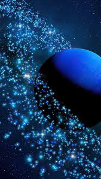

Нептун
Нептун — восьмая и самая удалённая планета от Солнца в Солнечной системе. Её диаметр составляет
около 49 244 километров, что делает Нептун четвёртой по величине планетой в системе. Как и Уран,
Нептун является газовым гигантом, состоящим преимущественно из водорода, гелия и воды в виде льда, и
не имеет твёрдой поверхности.
Планета также имеет характерный синий
цвет, который обусловлен присутствием метана в атмосфере, поглощающею красный свет.
Нептун окружён системой колец и имеет 14 известных спутников, среди которых самый крупный — Тритон,
ледяная луна, которая вращается вокруг планеты в обратном направлении. Это делает Тритон уникальным
среди спутников газовых гигантов.